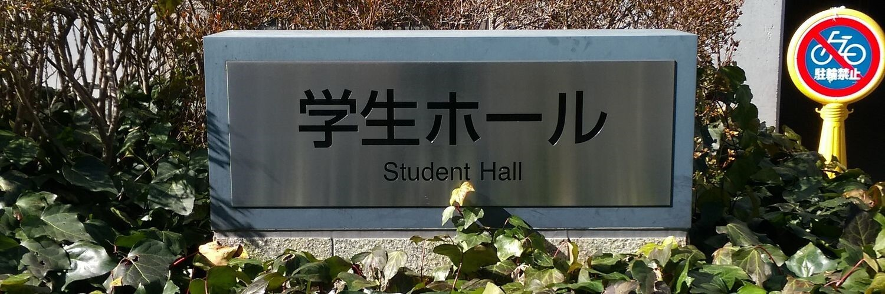

文化部連合
文化部連合とは？
正式名称「東京都立大学文化部連合」(通称「文連」)は大学公認の上部団体、学生自治体の1つです。
主に運動系・学術系・音楽系・文化系の４系統からなり、総数57団体ものサークルから構成されています。
サークルに入ろう！
本学のサークル活動環境は、全国でも有数の恵まれた状況にあります。
文連には王道のものから他では見られない特徴あるサークルまでバラエティ豊かな 57 の団体が所属しています。
各サークルは様々な工夫をして活動をおこなっています。今年度は制限も徐々に緩和され、ここ数年できなかった活動が再開されていくと思われます。
せっかく都立大に入学したのに、サークルに入らないのはもったいない！
文化部連合所属団体
【運動系】3団体
・WILD BOARS (チアリーディング) ・人力飛行機研究会MaPPL ・キャンプサークルCaps5
【学術系】6団体
・ESS(英会話) ・第三文明研究会 ・司法問題研究会・ナチュール・いきもの!サークル東京・地理学研究会
【音楽系】14団体
・吹奏楽団 ・管弦楽団 ・古典ギター部 ・フォークソング研究会・Dolce（ピアノ・室内楽）・エリカ混声合唱団 ・グリークラブ ・Revolver(バンド) ・軽音楽部 ・三曲会(和楽器) ・JaZZ 研究会 ・unplugged(アコースティックギター) ・BeatRize（ヒューマンビートボックス）
【文化系】34団体
・劇団時計 ・書道部 ・美術部 ・鉄道研究会 ・A.T.L(文芸) ・囲碁部 ・将棋部 ・茶道研究会 ・推理小説研究会 ・マイクロコンピュータ研究会 ・マンガ研究会 ・映画サークル KINO ・FINAL☆FLASH(ダンス) ・Cap 5 (ファッションショー) ・Close up Magic Circle(マジック) ・ボードゲーム研究会 ・めとぽけ ・Team”Lamp”(ジャグリング) ・AR 会 ・クイズ研究会 ・TMU-SFC(子供向けボランティア) ・CUBE(フラッシュモブ) ・学生教育研究会 ・児童文化研究会 ・写真部 ・都立大音ゲーサークル ・スイートピア・スマん研・Hat Trick（ダーツ）・ボランティアサークルaiddy・StudioFly・メタバース研究会・都立大子どもまつり実行委員会・劇団青いバラ
問い合わせ先
- 文連本部：学生ホール213(内線2324)
- 新歓に関する問い合わせ：bunrenshinkan2024●gmail.com
- 文連一般の問い合わせ：tmu.bunren●gmail.com
- ●を @ に置き換えてお送りください。
- 公式ホームページ：tmu-bunren.jimbo.com
- 文連公式twitter: @bunrentmu